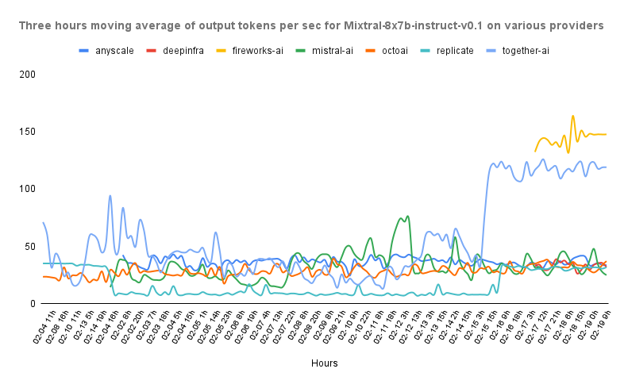
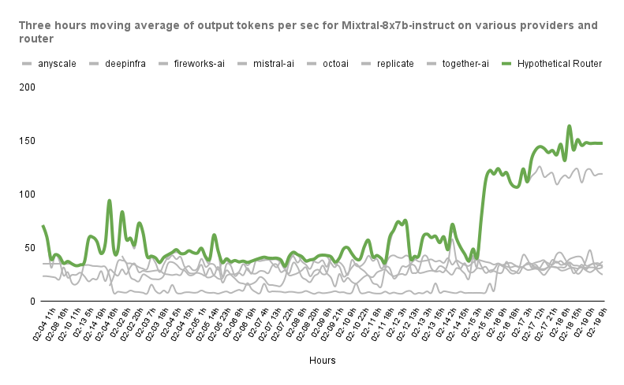

Dynamic Routing#
When querying models, we usually care for one metric over the rest. This can be cost if prototyping an application, TTFT if building a bot where responsiveness is key, or output tokens per second if we want to generate responses as fast as possible. Being able to compare these metrics among providers mitigates this issue (and that’s why we run our benchmarks!).
However, these providers are inherently transient (You can read more about this here), which means that they are affected by things like traffic, available devices, changes in the software or hardware stack, and so on.
Ultimately, this results in a landscape where it’s usually not possible to conclude that one provider is the best.
Let’s take a look at this graph from our benchmarks.
{kind=link}

In this image we can see the output tokens per second of different providers hosting a Mixtral-8x7b public endpoint. We can see how depending on the time of the day, the “best” provider changes.
When you use runtime dynamic routing, we automatically redirect your request to the provider that is outperforming the other services at that very moment! You don’t need to do anything else ⬇️
{kind=link}

How to route#
You can quickly try the routing yourself with this example. Spoiler: All you need to do is replacing the provider in your query with one of the available routing modes!
Available Modes#
Currently, we support a set of predefined configurations for the routing:
lowest-input-cost/input-costlowest-output-cost/output-costlowest-itl/itllowest-ttft/ttfthighest-tks-per-sec/tks-per-sec
For example, you can query the endpoint llama-2-7b-chat@itl to get the provider with the
lowest Inter-Token-Latency.
Thresholds#
Additionally, you have the option to include multiple thresholds for other metrics in each configuration.
This feature enables you to get, for example, the highest tokens per second (highest-tks-per-sec) for any provider whose ttft is lower than a specific threshold. To set this up, just append <[float][metric] to your preferred mode when specifying a provider. To keep things simple, we have added aliases for output-cost (oc), input-cost (ic) and output-tks-per-sec (ots).
Let’s illustrate this with some examples:
lowest-itl<0.5input-cost- In this case, the request will be routed to the provider with the lowest Inter-Token-Latency that has an Input Cost smaller than 0.5 credits per million tokens.highest-tks-per-sec<1output-cost- Likewise, in this scenario, the request will be directed to the provider offering the highest Output Tokens per Second, provided their cost is below 1 credit per million tokens.ttft<0.5ic<15itl- Now we have something similar to the first example, but we are usingicas an alias toinput-cost, and we have also added<15itlto only consider endpoints that have an Inter-Token-Latency of less than 15 ms.
Depending on the specified threshold, there might be scenarios where no providers meet the criteria, rendering the request unfulfillable. In such cases, the API response will be a 404 error with the corresponding explanation. You can detect this and change your policy doing something like:
import requests
url = "https://api.unify.ai/v0/chat/completions"
headers = {
"Authorization": "Bearer YOUR_UNIFY_KEY",
}
payload = {
# This won't work since no provider has this price! (yet?)
"model": "llama-2-70b-chat@lowest-itl<0.001ic",
"messages": [{
"role": "user",
"content": "Hello!"
}],
}
response = requests.post(url, json=payload, headers=headers)
if response.status_code == 404:
# We'll get the cheapest endpoint as a fallback
payload["model"] = "llama-2-70b-chat@lowest-input-cost"
response = requests.post(url, json=payload, headers=headers)
That’s about it! We will be making these modes more flexible in the coming weeks, allowing you to define more specific and fine-grained rules 🔎